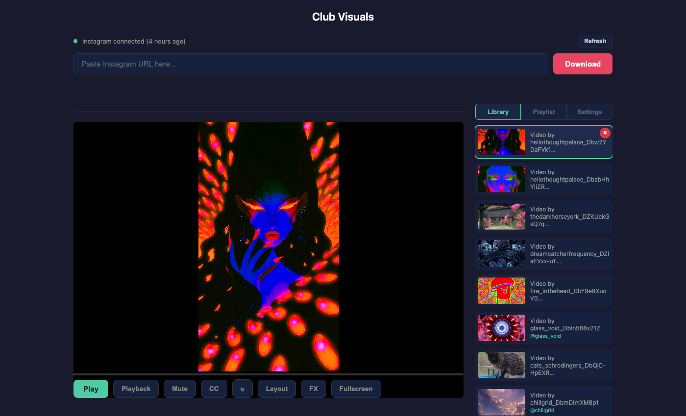

Club Visuals — User Guide
Club Visuals is a browser-based tool for downloading Instagram videos and playing them back as multi-screen DJ visuals with mirror and kaleidoscope effects. It runs entirely on your machine using a lightweight Python server and a single HTML frontend — no cloud services, no subscriptions, no dependencies beyond the standard library.

01-main-overview.png).Who this guide is for
This guide is for DJs and VJs who want to build visual sets from Instagram content — reels, edits, loops, and motion graphics — and play them back in clubs, at events, or through OBS for live streams. It assumes you are comfortable running a terminal command and using a web browser.
What Club Visuals does
- Downloads Instagram reels and posts with a single URL paste
- Manages a video library with thumbnail previews and metadata
- Plays videos in five layout modes: Single, Dual, 3x, 4x, and 8x grid
- Applies 32 mirror/kaleidoscope presets across tiles
- Provides live FX control: hue, saturation, contrast, brightness, blur, invert, sepia, trails, and audio-reactive effects
- Builds playlists with per-entry layout, preset, and duration settings
- Auto-generates randomised playlists to a target duration
- Records the composite output as MP4
- Provides a clean output window for OBS capture or a second display
- Runs gap-free fullscreen playback with auto-hiding controls
Contents
Install & Setup
macOS requirements, dependencies, starting and stopping the server.
Downloading Videos
Instagram connection, cookie management, downloading reels and posts.
Playback & Views
Library, view modes, mirror presets, zoom and pan, playback modes, fullscreen.
Effects & Audio
FX Controller, effect presets, motion trails, audio-reactive effects.
Playlists
Create, edit, reorder, auto-generate, and play back visual playlists.
Output & Recording
OBS output window, recording composite video, secondary display setup.
Reference
File structure, API endpoints, configuration, keyboard shortcuts.